Bible fill-in-the-blank, round two 🤭 "Who can find a virtuous woman? for her price is far above ______." Proverbs 31:10 No peeking. Drop the missing word in the comments 👇 #P31Marketplace #Proverbs31Woman #BibleChallenge #FaithAndBusiness #WomenWhoBuild
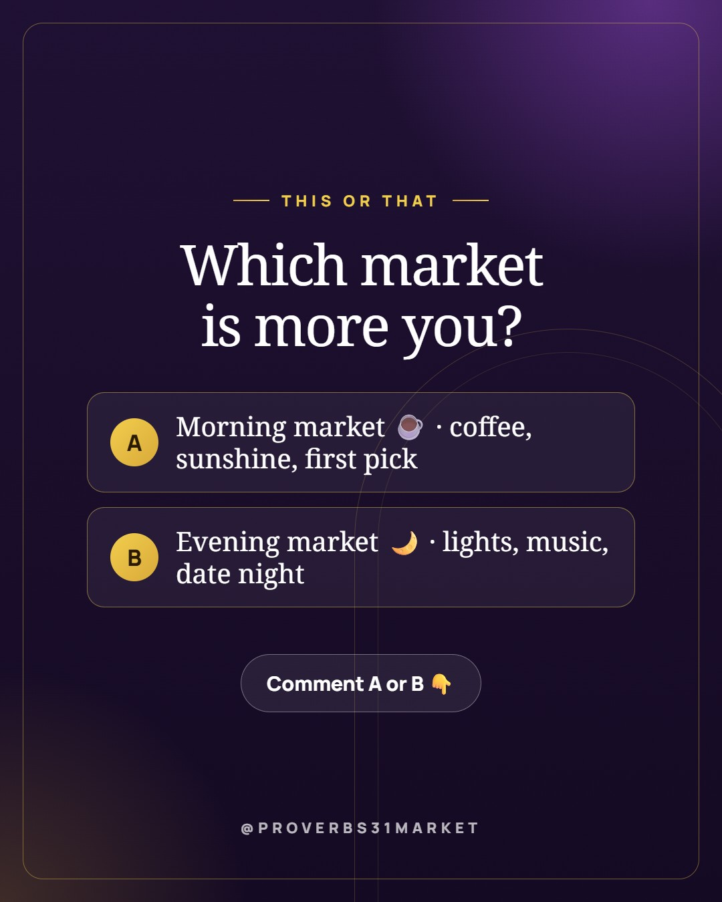
Settle it for us: morning market or evening market? ☕🌙 A) Morning: coffee in hand, sunshine, first pick of everything B) Evening: string lights, music, make it a date night Comment A or B, and tell us why 👇 We read every answer when we plan the next one. #P31Marketplace #Proverbs31Woman #WomenWhoBuild #KingdomEntrepreneur #AtlantaMarkets
This verse is where "Where her gifts make room" comes from. 💜 "A man's gift maketh room for him, and bringeth him before great ______." Proverbs 18:16 Fill in the blank in the comments 👇 Then tell us: what's the gift that keeps opening doors for you? #P31Marketplace #Proverbs31Woman #BibleChallenge #FaithAndBusiness #WomenWhoBuild
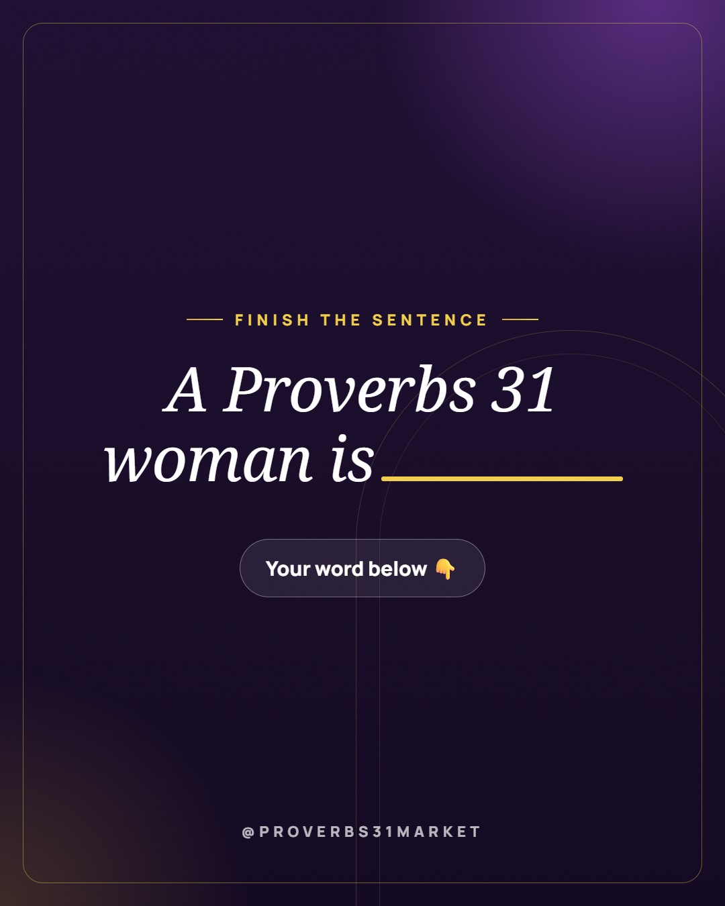
Finish the sentence: a Proverbs 31 woman is ______. One word or a whole paragraph, we want to hear how you'd say it. 👇 #P31Marketplace #Proverbs31Woman #WomenWhoBuild #KingdomEntrepreneur #AtlantaMarkets
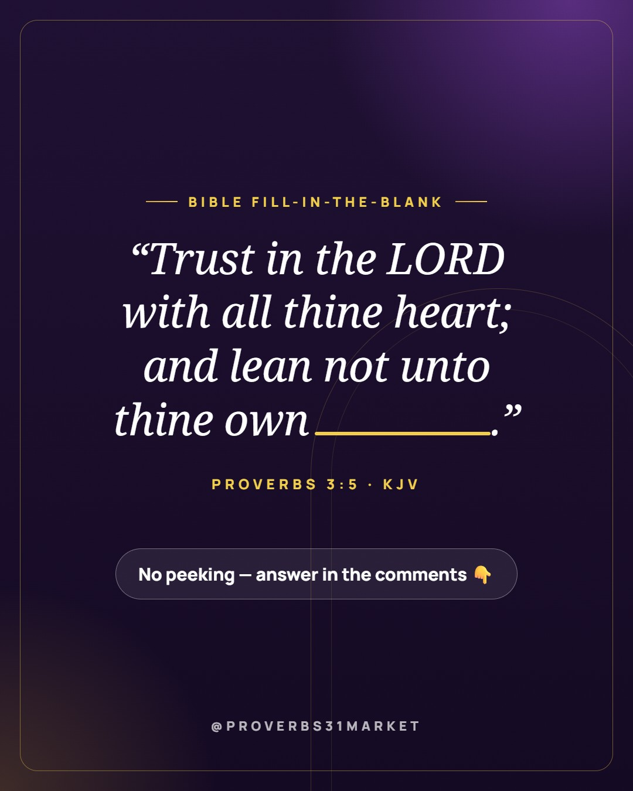
Lunch-break Bible check 📖 "Trust in the LORD with all thine heart; and lean not unto thine own ______." Proverbs 3:5 No peeking, no Googling. Comment the word 👇 #P31Marketplace #Proverbs31Woman #BibleChallenge #FaithAndBusiness #WomenWhoBuild
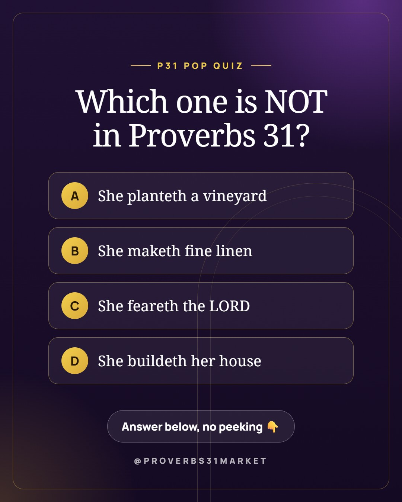
P31 pop quiz. Which of these is NOT in Proverbs 31? 🧐 A) She planteth a vineyard B) She maketh fine linen C) She feareth the LORD D) She buildeth her house Answer in the comments before you look it up 👇 (One of these lives in a different chapter.) #P31Marketplace #Proverbs31Woman #BibleChallenge #FaithAndBusiness #WomenWhoBuild
Makers, this one's for you. 🕯️💍🧁 Vendor applications for the Winter Gala are open. If you make it with your hands, we want to see it: art, beauty, clothing, food, wellness, home. The form takes five minutes and we reply to every single one. Apply at p31market.com/apply (link in bio). Know a woman whose work belongs on a P31 table? Send her this. #P31Marketplace #WomenOwnedBusiness #AtlantaMarkets #KingdomEntrepreneur
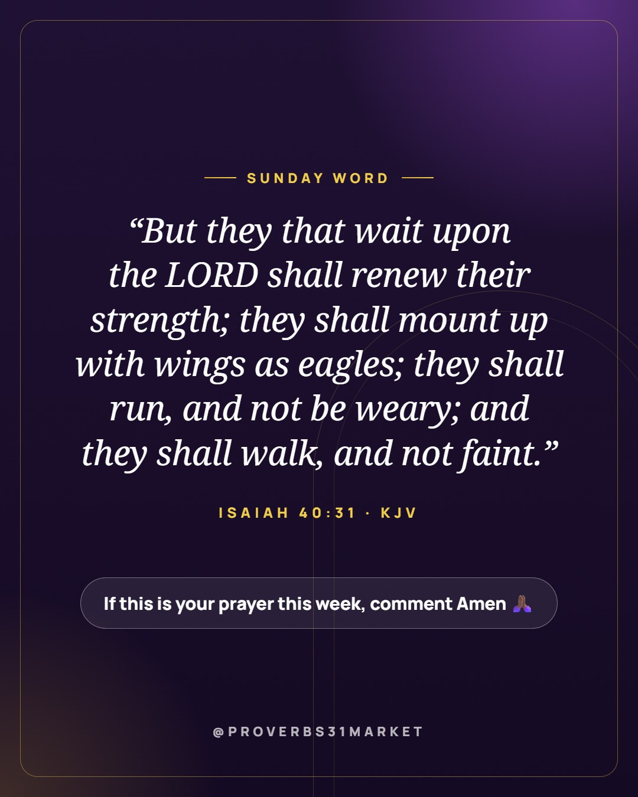
For the woman in a waiting season. 🕊️ "But they that wait upon the LORD shall renew their strength; they shall mount up with wings as eagles; they shall run, and not be weary; and they shall walk, and not faint." Isaiah 40:31 If this is your prayer this week, comment Amen 🙏🏾 and we'll be praying it with you. #P31Marketplace #Proverbs31Woman #SundayWord #FaithAndBusiness
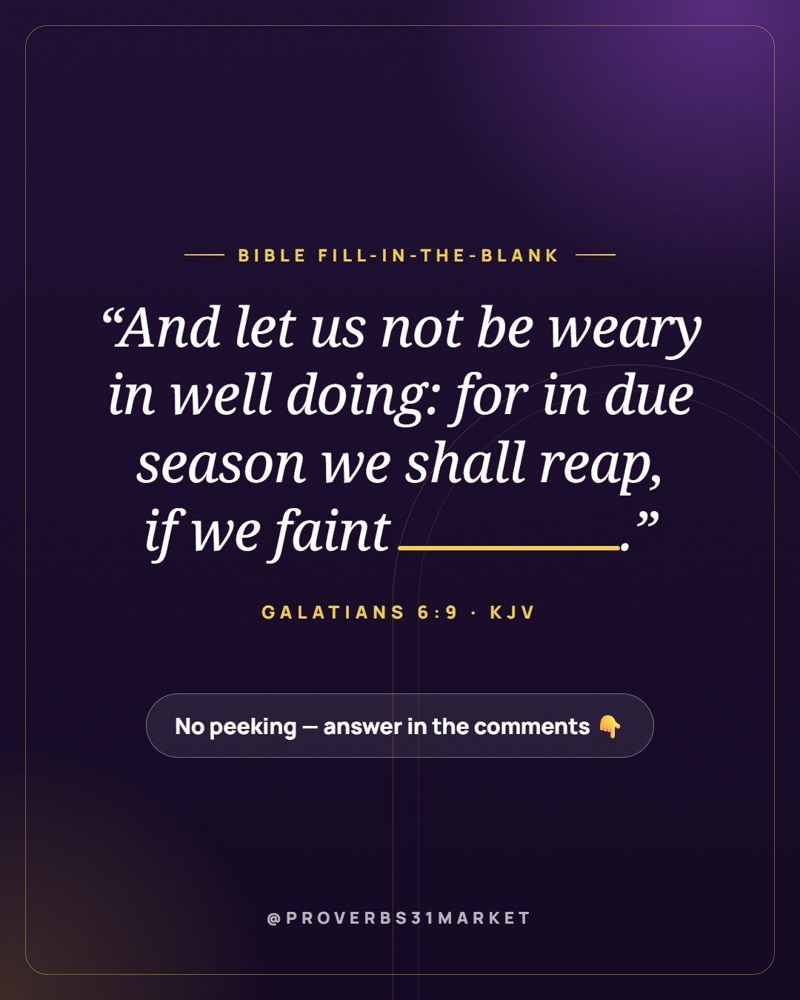
Monday fill-in-the-blank, for everyone building something slowly. 🌱 "And let us not be weary in well doing: for in due season we shall reap, if we faint ______." Galatians 6:9 Comment the word 👇 and if you're tired this week, say that too. #P31Marketplace #Proverbs31Woman #BibleChallenge #FaithAndBusiness #WomenWhoBuild
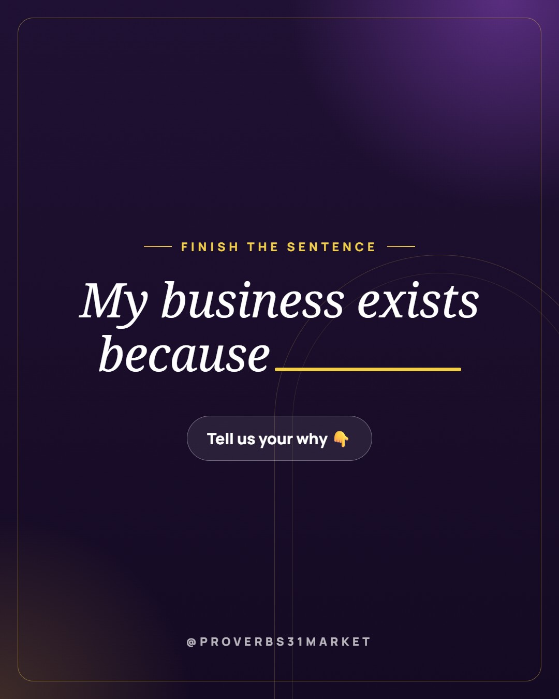
Finish the sentence: my business exists because ______. The real reason, not the polished one. Drop it below 👇 We'll be reading every single one. #P31Marketplace #Proverbs31Woman #WomenWhoBuild #KingdomEntrepreneur #AtlantaMarkets
Midweek Bible fill-in-the-blank 📖 "She openeth her mouth with wisdom; and in her tongue is the law of ______." Proverbs 31:26 Comment your answer 👇 Bonus: who's a woman in your life who lives this verse? #P31Marketplace #Proverbs31Woman #BibleChallenge #FaithAndBusiness #WomenWhoBuild
You walk into a P31 market with $40. What goes in the bag first? 👜 A) A handmade candle 🕯️ B) A handmade piece of jewelry 💍 Comment A or B 👇 (and if you make either one, tell us, we're always looking.) #P31Marketplace #Proverbs31Woman #WomenWhoBuild #KingdomEntrepreneur #AtlantaMarkets
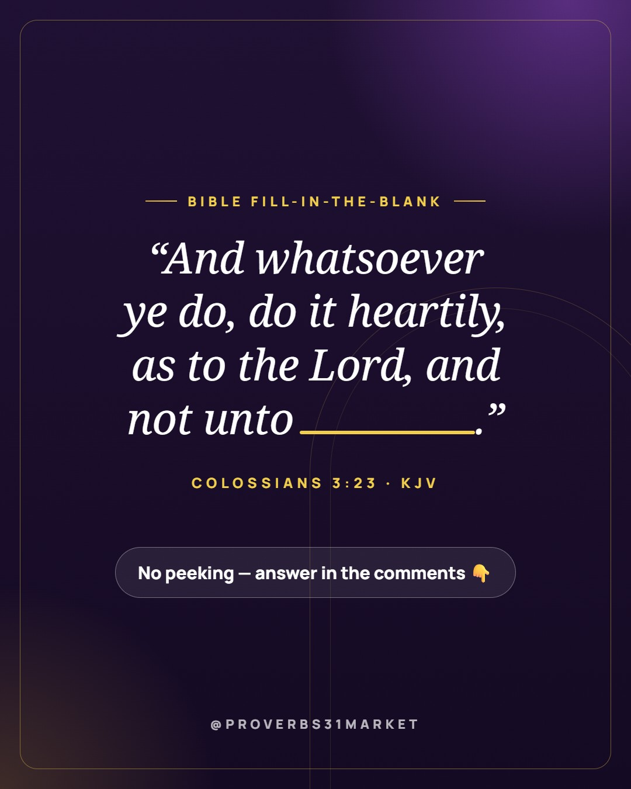
Friday fill-in-the-blank for the women who do it heartily. 💪🏾 "And whatsoever ye do, do it heartily, as to the Lord, and not unto ______." Colossians 3:23 No peeking, comment the word 👇 #P31Marketplace #Proverbs31Woman #BibleChallenge #FaithAndBusiness #WomenWhoBuild
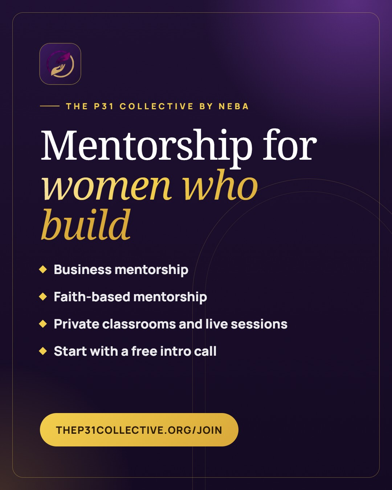
Some of you are not waiting on a sign. You're waiting on a mentor. 💜 The P31 Collective by NEBA is private mentorship for faith-driven women entrepreneurs: business mentorship and faith-based mentorship, with live sessions and a classroom built for you. It starts with a free intro call. Apply at thep31collective.org/join (link in bio). #P31Marketplace #WomenOwnedBusiness #AtlantaMarkets #KingdomEntrepreneur
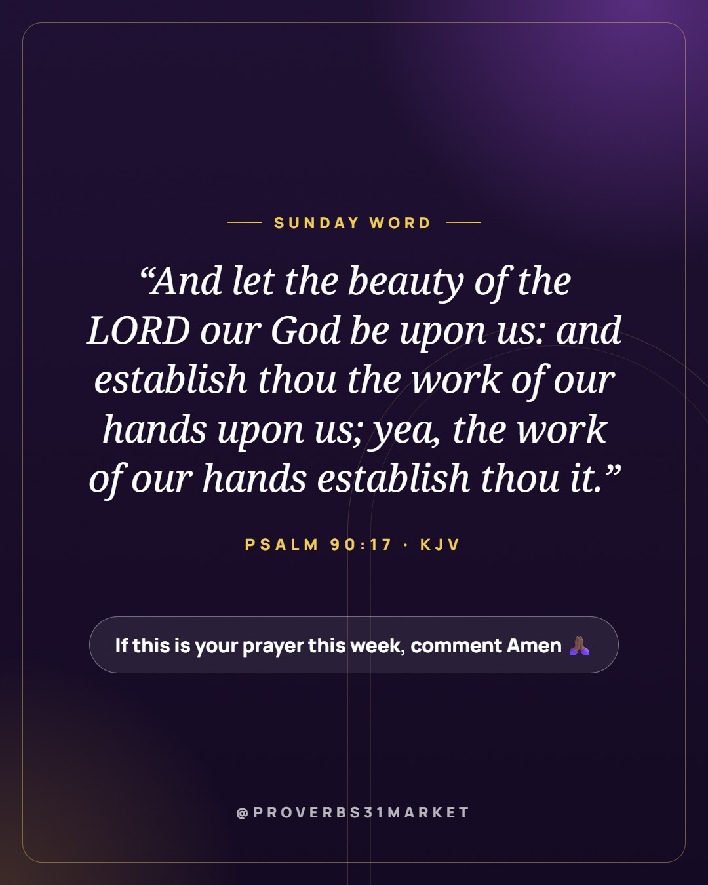
New month. Same prayer over your hands. 🙌🏾 "And let the beauty of the LORD our God be upon us: and establish thou the work of our hands upon us; yea, the work of our hands establish thou it." Psalm 90:17 Comment Amen if you're asking God to establish your work this month 🙏🏾 #P31Marketplace #Proverbs31Woman #SundayWord #FaithAndBusiness
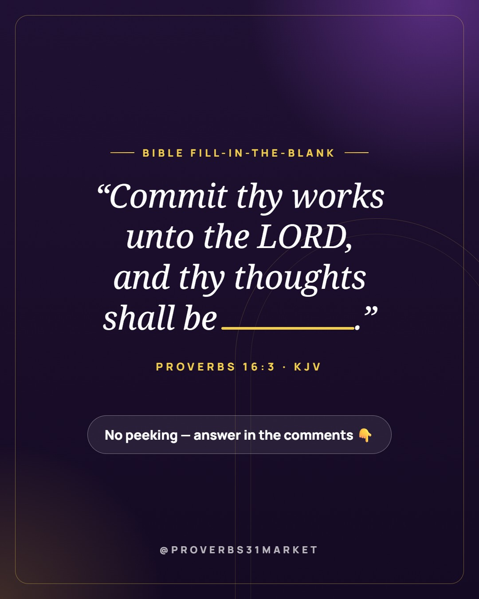
Monday Bible fill-in-the-blank 📖 "Commit thy works unto the LORD, and thy thoughts shall be ______." Proverbs 16:3 Comment the word 👇 Then tell us one thing you're committing to Him this week. #P31Marketplace #Proverbs31Woman #BibleChallenge #FaithAndBusiness #WomenWhoBuild
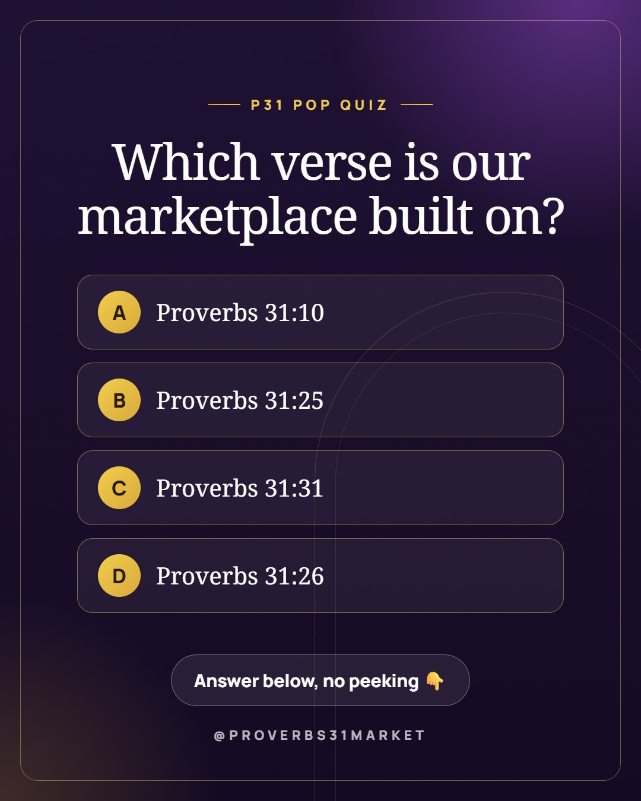
P31 pop quiz 🧐 Which verse is the whole marketplace built on? A) Proverbs 31:10 B) Proverbs 31:25 C) Proverbs 31:31 D) Proverbs 31:26 Comment your letter 👇 (If you've been here a while, you know this one.) #P31Marketplace #Proverbs31Woman #BibleChallenge #FaithAndBusiness #WomenWhoBuild
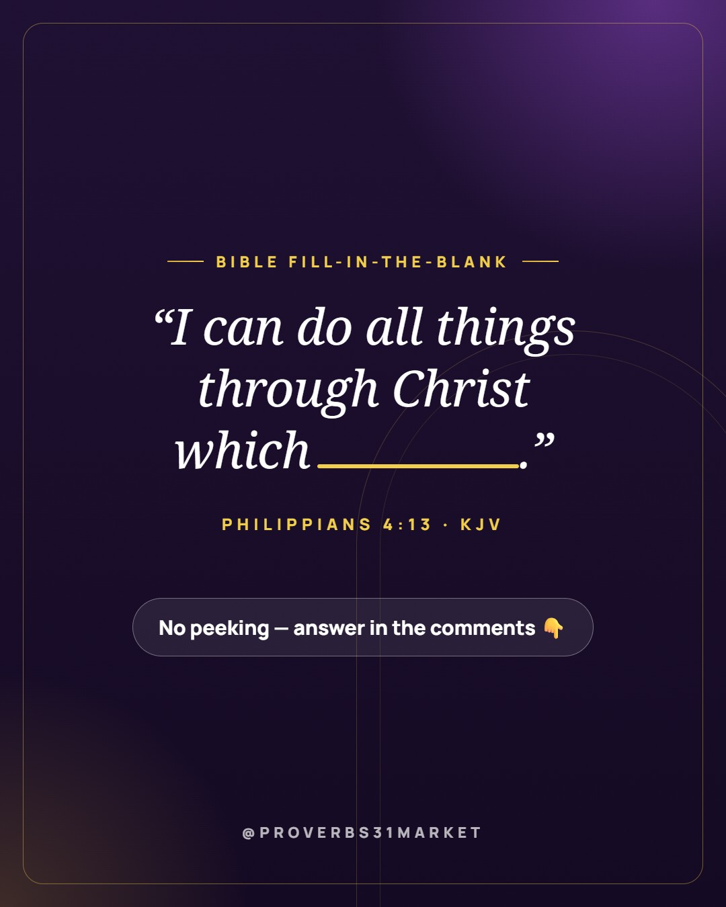
Midweek check-in. Finish the verse 💪🏾 "I can do all things through Christ which ______." Philippians 4:13 Comment the missing words 👇 and name the thing you're doing this week that needs that strength. #P31Marketplace #Proverbs31Woman #BibleChallenge #FaithAndBusiness #WomenWhoBuild
Finish the sentence: the best money advice a woman ever gave me was ______. A mother, an auntie, a mentor, a stranger at a market. Pass it on in the comments 👇 Someone here needs it tonight. #P31Marketplace #Proverbs31Woman #WomenWhoBuild #KingdomEntrepreneur #AtlantaMarkets
Friday fill-in-the-blank 📖 "Favour is deceitful, and beauty is vain: but a woman that feareth the LORD, she shall be ______." Proverbs 31:30 No peeking. Comment the word 👇 #P31Marketplace #Proverbs31Woman #BibleChallenge #FaithAndBusiness #WomenWhoBuild
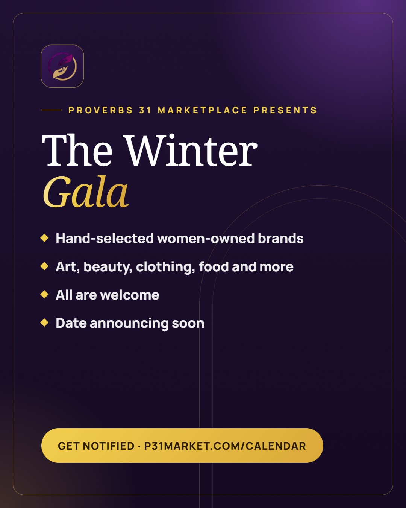
The Winter Gala is coming. ✨ Hand-selected women-owned brands under one roof: art, beauty, clothing, food and more. All are welcome. The date drops soon, and the people on our list hear first. Get notified at p31market.com/calendar (link in bio). Who are you bringing? Tag your market partner below 👇 #P31Marketplace #WomenOwnedBusiness #AtlantaMarkets #KingdomEntrepreneur
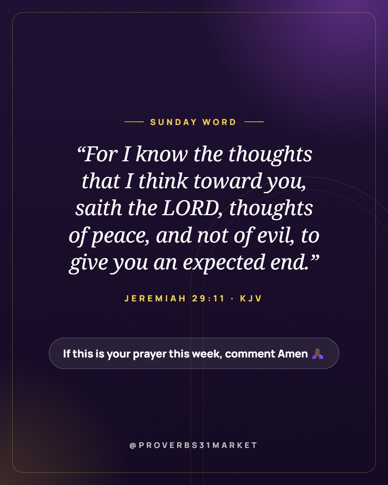
Sunday word for the woman who can't see the whole plan yet. 🕊️ "For I know the thoughts that I think toward you, saith the LORD, thoughts of peace, and not of evil, to give you an expected end." Jeremiah 29:11 Comment Amen if you're trusting the plan you can't see 🙏🏾 #P31Marketplace #Proverbs31Woman #SundayWord #FaithAndBusiness
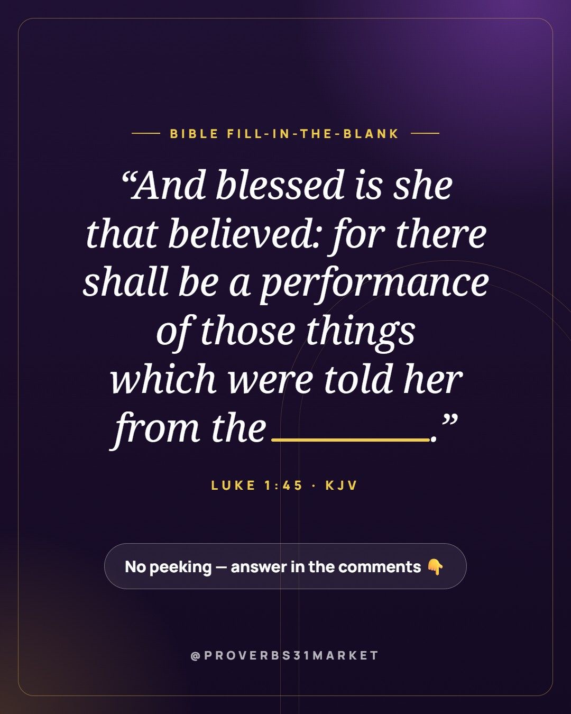
Monday fill-in-the-blank, and it's one of our favorites. 💜 "And blessed is she that believed: for there shall be a performance of those things which were told her from the ______." Luke 1:45 Comment the word 👇 and tell us: what have you been believing for? #P31Marketplace #Proverbs31Woman #BibleChallenge #FaithAndBusiness #WomenWhoBuild
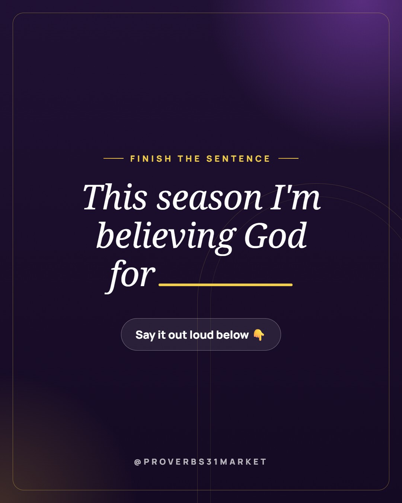
Finish the sentence: this season I'm believing God for ______. Say it here first. Speaking it is half the faith. 👇 #P31Marketplace #Proverbs31Woman #WomenWhoBuild #KingdomEntrepreneur #AtlantaMarkets